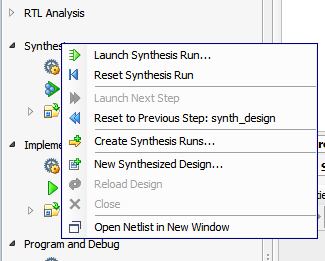

Flow Navigator には、プロジェクト ソースの管理からビットストリーム ファイルの生成、ハードウェアでのデザインの実行など、Vivado® Design Suite デザイン フローの簡潔な表示が提供されています。デザイン フローの次の主な段階にアクセスできます。
- [Project Manager] : [Project Summary] ウィンドウ、Add Design Sources ウィザード、言語テンプレート、および Vivado IP カタログなどのさまざまなプロジェクト管理ツールへアクセスできます。これらのツールでは、デザインのサマリ表示が提供され、デザインのリソース使用率を確認できるほか、ファイル システムまたは IP カタログから新しいデザイン ソースを追加できます。
- [IP Integrator] : ハイレベル デザインまたはスタンドアロン デザインに含める複雑なサブシステム デザインを作成できます。Flow Navigator のこのセクションには、新しいブロック デザインを作成したり、既存ブロック デザインを開いたり、ブロック デザインをサポートするために必要な出力ファイルを生成するためのコマンドが含まれます。詳細は、『Vivado Design Suite ユーザー ガイド : IP インテグレーターを使用した IP サブシステムの設計』 (UG994) を参照してください。
- [Simulation] : Vivado シミュレータまたは統合されたサードパーティ シミュレータを起動して、ビヘイビアー、論理、またはタイミング シミュレーションを実行します。詳細は、『Vivado Design Suite ユーザー ガイド : ロジック シミュレーション』 (UG900) を参照してください。
- [RTL Analysis] : エラボレートしたネットリストで RTL デザインを開いて、さまざまなデザイン エレメントの早期試行および解析を実行できます。このセクションからは、デザイン ルール チェックを実行するコマンドやノイズ解析をレポートするコマンドやデザインの回路図を表示するコマンドを実行できます。詳細は、『Vivado Design Suite ユーザー ガイド : カスタム IP の作成およびパッケージ』 (UG895) のこのセクションを参照してください。
- [Synthesis] : 合成デザイン run を作成して開始するか、合成済みデザインを開いて解析します。タイミング制約ウィザードを開いて、制約を編集することもできます。デバッグ コアを合成済みデザインに追加して、解析を実行できます。詳細は、『Vivado Design Suite ユーザー ガイド : 合成』 (UG901) (UG901) を参照してください。
- [Implementation] : インプリメンテーション設定をコンフィギュレーションします。インプリメンテーション デザイン run を作成して実行して、ネットリストをターゲット デバイスまたはボードに配置配線します。また、配置配線したデザインのためのさまざまな解析ツールにアクセスできます。詳細は、『Vivado Design Suite ユーザー ガイド : インプリメンテーション』 (UG904) を参照してください。
- [Program and Debug] : インプリメント デザインを使用してハードウェア デバイスをプログラムするためのビットストリーム ファイルを生成し、Vivado ハードウェア マネージャーを開いてデザインを物理的デバイスでデバッグします。詳細は、『Vivado Design Suite ユーザー ガイド : プログラムおよびデバッグ』 (UG908) を参照してください。
|
Flow Navigator では、各段階のヘディングをダブルクリックすると、段階を展開または非展開にできます。この方法を使用すると、全体像を把握しつつデザイン フローの詳細を非表示にできます。 デザイン フローの各段階には、デザインの設定および解析コマンドのメニューも提供されます。段階のヘディングを右クリックすると、デザイン フローのその段階でデザインをコンフィギュレーションするために使用可能なコマンドのメニューを開くことができます。 |
 |
アプリケーションの表示エリアを増やすために Flow Navigator を非表示にするには、Flow Navigator 右上の [Toggle the Display] コマンド () をクリックします。表示されない場合は、Vivado IDE の左上に Flow Navigator がタブとして表示されます。このタブをクリックすると、Flow Navigator ウィンドウが再び開きます。
関連項目
| 『Vivado Design Suite ユーザー ガイド : Vivado IDE の使用』 (UG893) の「Flow Navigator」 | |
 |
Vivado Design Suite QuickTake ビデオ : Vivado デザイン フローの概要 |